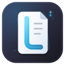
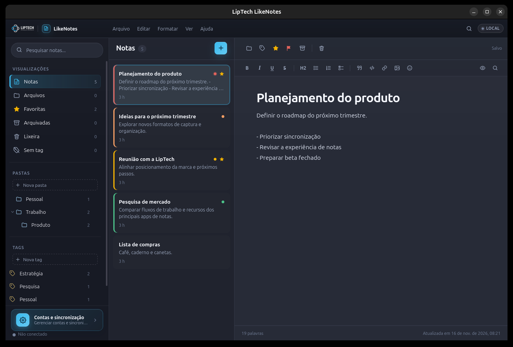
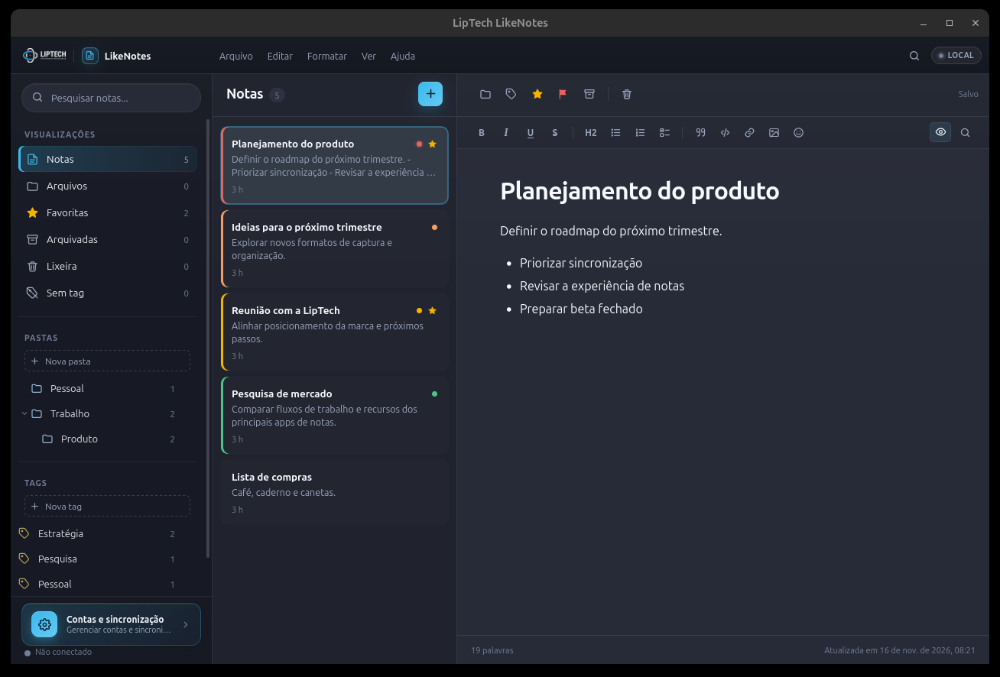
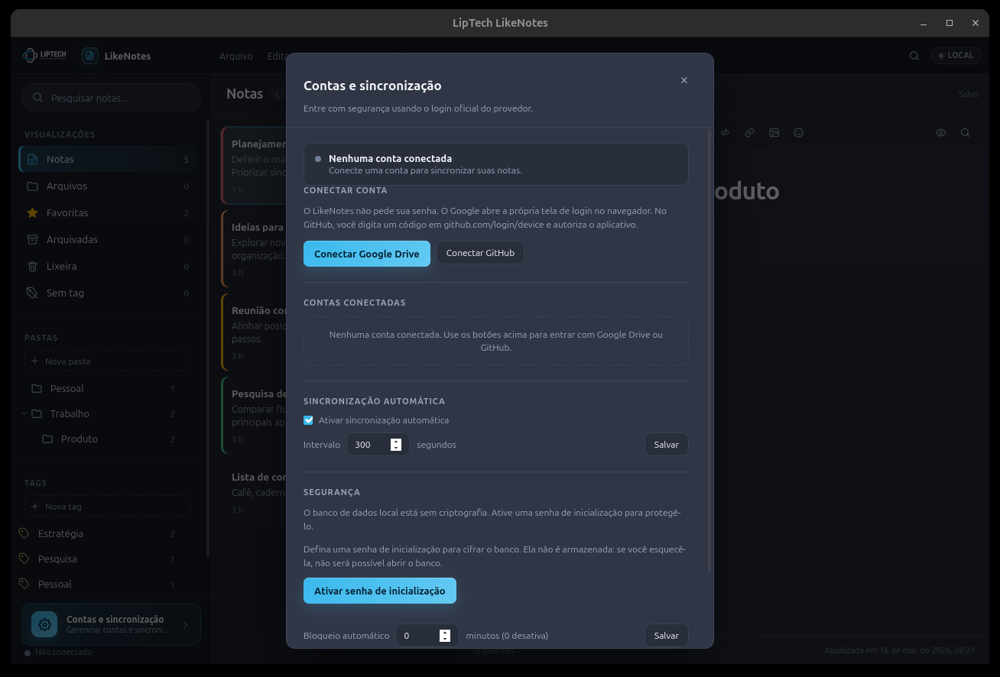

PROJETO⋮
Planejamento do produto
Definir o roadmap do próximo trimestre e transformar boas ideias em próximos passos.

LikeNotesby LIPTECH Começar agoraLikeNotes é o espaço privado para capturar pensamentos, organizar projetos e encontrar o que importa — sem abrir mão do controle.
Definir o roadmap do próximo trimestre e transformar boas ideias em próximos passos.
Um lugar calmo para escrever e organizar o que está na sua cabeça.
Revisar prioridades, compartilhar contexto e manter o foco.
Uma interface limpa, rápida e familiar para transformar o seu jeito de trabalhar com informação.



Uma ferramenta feita para desaparecer quando você precisa pensar — e aparecer quando precisa encontrar.
Pastas, tags, favoritos e prioridades trabalham juntos para você encontrar qualquer nota em poucos segundos.
Suas notas ficam cifradas no dispositivo. Você decide se e onde sincronizar.
Entenda a proteção →Sincronize com GitHub, Google Drive ou OneDrive sem entregar o conteúdo das suas notas.
Escreva em Markdown, adicione imagens, marque prioridades e mantenha seus projetos avançando.
O LikeNotes foi construído com uma ideia simples: suas notas são suas. A arquitetura local-first mantém você produtivo mesmo sem internet e a criptografia protege o conteúdo no caminho e no armazenamento.
Instale o LikeNotes pelo repositório oficial da LIPTECH e comece a escrever em poucos minutos.
$ curl -fsSL
https://apt.liptech.com.br/setup.sh
| sudo bash